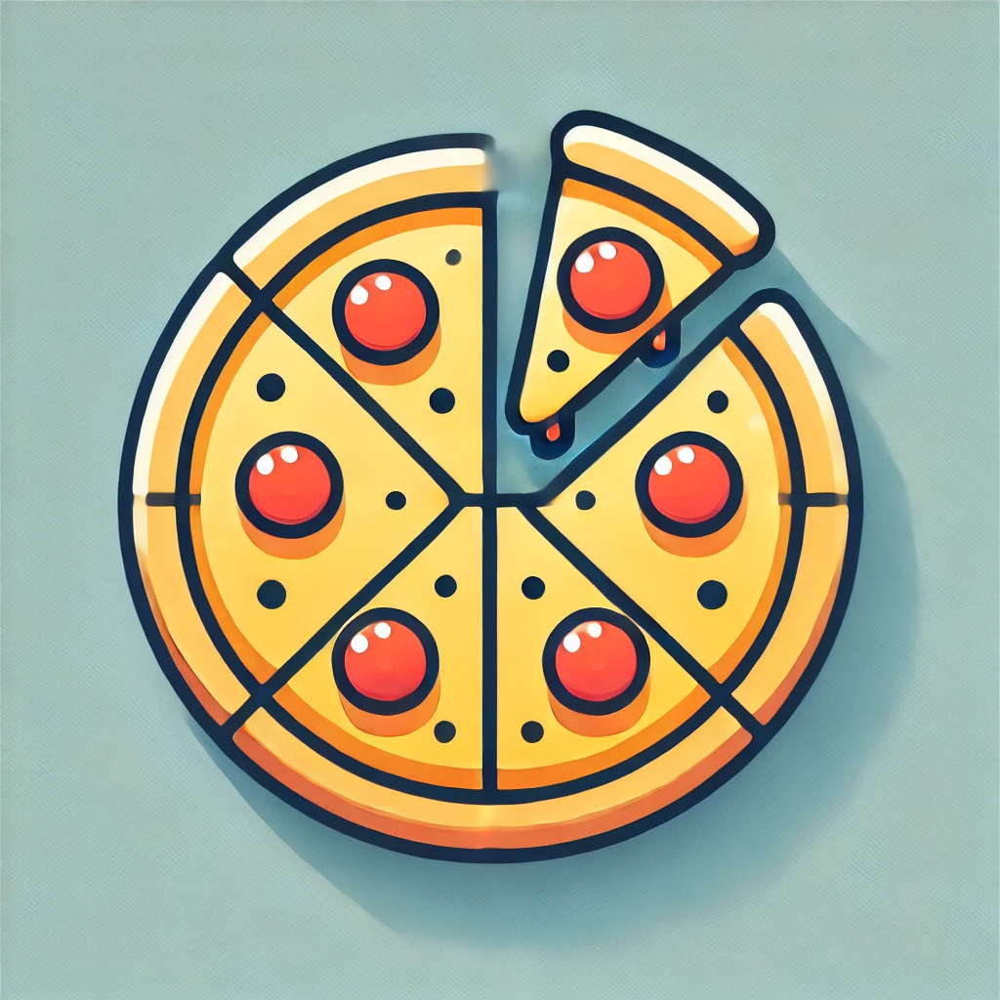

Малък наръчник за критично мислене
Логически
заблуди.
Не всеки аргумент
е добре изпечен.
Разпознай 24 капана в мисленето с примери от света на пицата. И от разговорите около нея.

„Последния път ядох пица и взех изпита. Утре вместо да уча, ще наблегна на пицата.“Открий заблудата
01 / Разгледай
Познай капана.
Понякога грешката е в аргумента.
Не в човека отсреща.
Зареждане на заблудите…
Не успяхме да заредим заблудите. Провери връзката и опитай отново.
Няма намерени заблуди. Опитай с друга дума или тема.
02 / Провери се
А ти ще
се подведеш ли?
Пет ситуации. По един слаб аргумент.
Открий го и разбери
защо.
Кратка тренировка
Добрият въпрос е начало.
Избери отговор, прочети обяснението и продължи. Няма таймер и няма нужда от регистрация.
За проекта
По-добри разговори.
По-ясно мислене.
Логическата заблуда е грешка в аргументацията. Може да я използваме и неволно. А слабият аргумент сам по себе си не означава, че заключението е невярно.
Тези 24 примера са вдъхновени от Your Logical Fallacy Is. За още понятия виж Rational Wiki. Темите тук са ориентир за разглеждане, а не строга класификация.
Опознай и когнитивните пристрастия ↗